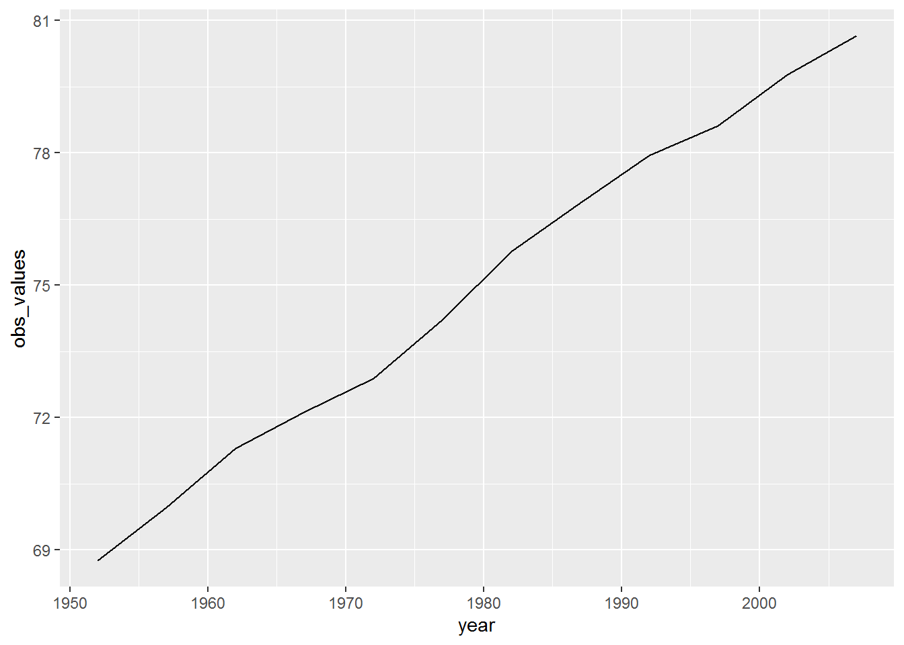
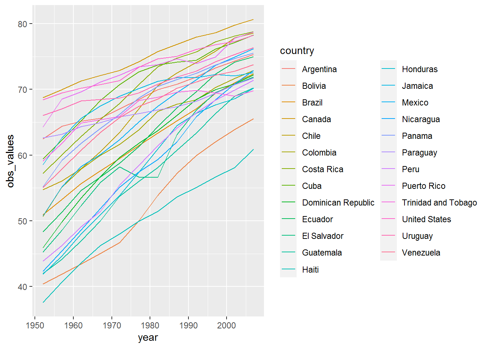
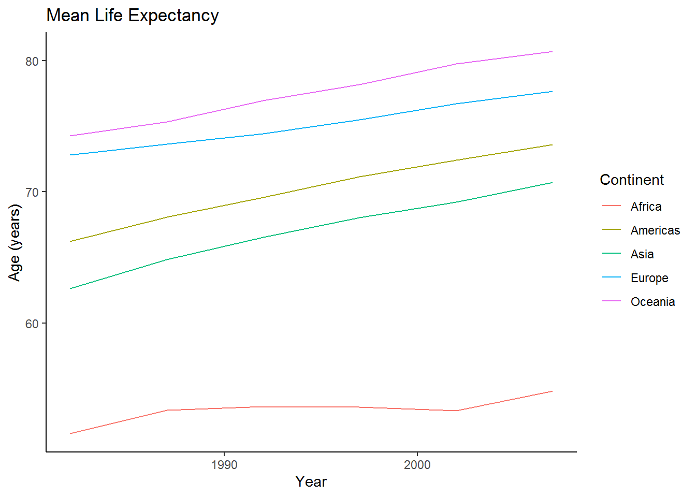

Data wrangling with 'tidyr'
library(tidyverse)
#wide format
gap_wide <- readr::read_csv('https://raw.githubusercontent.com/OHI-Science/data-science-training/master/data/gapminder_wide.csv')## Parsed with column specification:
## cols(
## .default = col_double(),
## continent = col_character(),
## country = col_character()
## )## See spec(...) for full column specifications.#yesterday's format
gapminder <- readr::read_csv('https://raw.githubusercontent.com/OHI-Science/data-science-training/master/data/gapminder.csv')## Parsed with column specification:
## cols(
## country = col_character(),
## year = col_double(),
## pop = col_double(),
## continent = col_character(),
## lifeExp = col_double(),
## gdpPercap = col_double()
## )head(gap_wide)## # A tibble: 6 x 38
## continent country gdpPercap_1952 gdpPercap_1957 gdpPercap_1962
## <chr> <chr> <dbl> <dbl> <dbl>
## 1 Africa Algeria 2449. 3014. 2551.
## 2 Africa Angola 3521. 3828. 4269.
## 3 Africa Benin 1063. 960. 949.
## 4 Africa Botswa~ 851. 918. 984.
## 5 Africa Burkin~ 543. 617. 723.
## 6 Africa Burundi 339. 380. 355.
## # ... with 33 more variables: gdpPercap_1967 <dbl>, gdpPercap_1972 <dbl>,
## # gdpPercap_1977 <dbl>, gdpPercap_1982 <dbl>, gdpPercap_1987 <dbl>,
## # gdpPercap_1992 <dbl>, gdpPercap_1997 <dbl>, gdpPercap_2002 <dbl>,
## # gdpPercap_2007 <dbl>, lifeExp_1952 <dbl>, lifeExp_1957 <dbl>,
## # lifeExp_1962 <dbl>, lifeExp_1967 <dbl>, lifeExp_1972 <dbl>,
## # lifeExp_1977 <dbl>, lifeExp_1982 <dbl>, lifeExp_1987 <dbl>,
## # lifeExp_1992 <dbl>, lifeExp_1997 <dbl>, lifeExp_2002 <dbl>,
## # lifeExp_2007 <dbl>, pop_1952 <dbl>, pop_1957 <dbl>, pop_1962 <dbl>,
## # pop_1967 <dbl>, pop_1972 <dbl>, pop_1977 <dbl>, pop_1982 <dbl>,
## # pop_1987 <dbl>, pop_1992 <dbl>, pop_1997 <dbl>, pop_2002 <dbl>,
## # pop_2007 <dbl>str(gap_wide)## tibble [142 x 38] (S3: spec_tbl_df/tbl_df/tbl/data.frame)
## $ continent : chr [1:142] "Africa" "Africa" "Africa" "Africa" ...
## $ country : chr [1:142] "Algeria" "Angola" "Benin" "Botswana" ...
## $ gdpPercap_1952: num [1:142] 2449 3521 1063 851 543 ...
## $ gdpPercap_1957: num [1:142] 3014 3828 960 918 617 ...
## $ gdpPercap_1962: num [1:142] 2551 4269 949 984 723 ...
## $ gdpPercap_1967: num [1:142] 3247 5523 1036 1215 795 ...
## $ gdpPercap_1972: num [1:142] 4183 5473 1086 2264 855 ...
## $ gdpPercap_1977: num [1:142] 4910 3009 1029 3215 743 ...
## $ gdpPercap_1982: num [1:142] 5745 2757 1278 4551 807 ...
## $ gdpPercap_1987: num [1:142] 5681 2430 1226 6206 912 ...
## $ gdpPercap_1992: num [1:142] 5023 2628 1191 7954 932 ...
## $ gdpPercap_1997: num [1:142] 4797 2277 1233 8647 946 ...
## $ gdpPercap_2002: num [1:142] 5288 2773 1373 11004 1038 ...
## $ gdpPercap_2007: num [1:142] 6223 4797 1441 12570 1217 ...
## $ lifeExp_1952 : num [1:142] 43.1 30 38.2 47.6 32 ...
## $ lifeExp_1957 : num [1:142] 45.7 32 40.4 49.6 34.9 ...
## $ lifeExp_1962 : num [1:142] 48.3 34 42.6 51.5 37.8 ...
## $ lifeExp_1967 : num [1:142] 51.4 36 44.9 53.3 40.7 ...
## $ lifeExp_1972 : num [1:142] 54.5 37.9 47 56 43.6 ...
## $ lifeExp_1977 : num [1:142] 58 39.5 49.2 59.3 46.1 ...
## $ lifeExp_1982 : num [1:142] 61.4 39.9 50.9 61.5 48.1 ...
## $ lifeExp_1987 : num [1:142] 65.8 39.9 52.3 63.6 49.6 ...
## $ lifeExp_1992 : num [1:142] 67.7 40.6 53.9 62.7 50.3 ...
## $ lifeExp_1997 : num [1:142] 69.2 41 54.8 52.6 50.3 ...
## $ lifeExp_2002 : num [1:142] 71 41 54.4 46.6 50.6 ...
## $ lifeExp_2007 : num [1:142] 72.3 42.7 56.7 50.7 52.3 ...
## $ pop_1952 : num [1:142] 9279525 4232095 1738315 442308 4469979 ...
## $ pop_1957 : num [1:142] 10270856 4561361 1925173 474639 4713416 ...
## $ pop_1962 : num [1:142] 11000948 4826015 2151895 512764 4919632 ...
## $ pop_1967 : num [1:142] 12760499 5247469 2427334 553541 5127935 ...
## $ pop_1972 : num [1:142] 14760787 5894858 2761407 619351 5433886 ...
## $ pop_1977 : num [1:142] 17152804 6162675 3168267 781472 5889574 ...
## $ pop_1982 : num [1:142] 20033753 7016384 3641603 970347 6634596 ...
## $ pop_1987 : num [1:142] 23254956 7874230 4243788 1151184 7586551 ...
## $ pop_1992 : num [1:142] 26298373 8735988 4981671 1342614 8878303 ...
## $ pop_1997 : num [1:142] 29072015 9875024 6066080 1536536 10352843 ...
## $ pop_2002 : num [1:142] 31287142 10866106 7026113 1630347 12251209 ...
## $ pop_2007 : num [1:142] 33333216 12420476 8078314 1639131 14326203 ...
## - attr(*, "spec")=
## .. cols(
## .. continent = col_character(),
## .. country = col_character(),
## .. gdpPercap_1952 = col_double(),
## .. gdpPercap_1957 = col_double(),
## .. gdpPercap_1962 = col_double(),
## .. gdpPercap_1967 = col_double(),
## .. gdpPercap_1972 = col_double(),
## .. gdpPercap_1977 = col_double(),
## .. gdpPercap_1982 = col_double(),
## .. gdpPercap_1987 = col_double(),
## .. gdpPercap_1992 = col_double(),
## .. gdpPercap_1997 = col_double(),
## .. gdpPercap_2002 = col_double(),
## .. gdpPercap_2007 = col_double(),
## .. lifeExp_1952 = col_double(),
## .. lifeExp_1957 = col_double(),
## .. lifeExp_1962 = col_double(),
## .. lifeExp_1967 = col_double(),
## .. lifeExp_1972 = col_double(),
## .. lifeExp_1977 = col_double(),
## .. lifeExp_1982 = col_double(),
## .. lifeExp_1987 = col_double(),
## .. lifeExp_1992 = col_double(),
## .. lifeExp_1997 = col_double(),
## .. lifeExp_2002 = col_double(),
## .. lifeExp_2007 = col_double(),
## .. pop_1952 = col_double(),
## .. pop_1957 = col_double(),
## .. pop_1962 = col_double(),
## .. pop_1967 = col_double(),
## .. pop_1972 = col_double(),
## .. pop_1977 = col_double(),
## .. pop_1982 = col_double(),
## .. pop_1987 = col_double(),
## .. pop_1992 = col_double(),
## .. pop_1997 = col_double(),
## .. pop_2002 = col_double(),
## .. pop_2007 = col_double()
## .. )# To transform the data into a long format
?gather
gap_long <- gap_wide %>%
gather(key = obstype_year,
value = obs_values)
str(gap_long)## tibble [5,396 x 2] (S3: tbl_df/tbl/data.frame)
## $ obstype_year: chr [1:5396] "continent" "continent" "continent" "continent" ...
## $ obs_values : chr [1:5396] "Africa" "Africa" "Africa" "Africa" ...head(gap_long)## # A tibble: 6 x 2
## obstype_year obs_values
## <chr> <chr>
## 1 continent Africa
## 2 continent Africa
## 3 continent Africa
## 4 continent Africa
## 5 continent Africa
## 6 continent Africatail(gap_long)## # A tibble: 6 x 2
## obstype_year obs_values
## <chr> <chr>
## 1 pop_2007 9031088
## 2 pop_2007 7554661
## 3 pop_2007 71158647
## 4 pop_2007 60776238
## 5 pop_2007 20434176
## 6 pop_2007 4115771#give the program more information on which columns we want reshaped
gap_long <- gap_wide %>%
gather(key = obstype_year,
value = obs_values,
dplyr::starts_with('pop'),
dplyr::starts_with('lifeExp'),
dplyr::starts_with('gdpPercap'))# name all the old columns to be included into this single new column
str(gap_long)## tibble [5,112 x 4] (S3: tbl_df/tbl/data.frame)
## $ continent : chr [1:5112] "Africa" "Africa" "Africa" "Africa" ...
## $ country : chr [1:5112] "Algeria" "Angola" "Benin" "Botswana" ...
## $ obstype_year: chr [1:5112] "pop_1952" "pop_1952" "pop_1952" "pop_1952" ...
## $ obs_values : num [1:5112] 9279525 4232095 1738315 442308 4469979 ...head(gap_long)## # A tibble: 6 x 4
## continent country obstype_year obs_values
## <chr> <chr> <chr> <dbl>
## 1 Africa Algeria pop_1952 9279525
## 2 Africa Angola pop_1952 4232095
## 3 Africa Benin pop_1952 1738315
## 4 Africa Botswana pop_1952 442308
## 5 Africa Burkina Faso pop_1952 4469979
## 6 Africa Burundi pop_1952 2445618tail(gap_long)## # A tibble: 6 x 4
## continent country obstype_year obs_values
## <chr> <chr> <chr> <dbl>
## 1 Europe Sweden gdpPercap_2007 33860.
## 2 Europe Switzerland gdpPercap_2007 37506.
## 3 Europe Turkey gdpPercap_2007 8458.
## 4 Europe United Kingdom gdpPercap_2007 33203.
## 5 Oceania Australia gdpPercap_2007 34435.
## 6 Oceania New Zealand gdpPercap_2007 25185.?separate
gap_long <- gap_wide %>%
gather(key = obstype_year,
value = obs_values,
-continent, -country) %>%
separate(obstype_year,
into = c('obs_type', 'year'),
sep = "_",
convert = TRUE) #this ensures that the year column is an integer rather than a character
str(gap_long)## tibble [5,112 x 5] (S3: tbl_df/tbl/data.frame)
## $ continent : chr [1:5112] "Africa" "Africa" "Africa" "Africa" ...
## $ country : chr [1:5112] "Algeria" "Angola" "Benin" "Botswana" ...
## $ obs_type : chr [1:5112] "gdpPercap" "gdpPercap" "gdpPercap" "gdpPercap" ...
## $ year : int [1:5112] 1952 1952 1952 1952 1952 1952 1952 1952 1952 1952 ...
## $ obs_values: num [1:5112] 2449 3521 1063 851 543 ...head(gap_long)## # A tibble: 6 x 5
## continent country obs_type year obs_values
## <chr> <chr> <chr> <int> <dbl>
## 1 Africa Algeria gdpPercap 1952 2449.
## 2 Africa Angola gdpPercap 1952 3521.
## 3 Africa Benin gdpPercap 1952 1063.
## 4 Africa Botswana gdpPercap 1952 851.
## 5 Africa Burkina Faso gdpPercap 1952 543.
## 6 Africa Burundi gdpPercap 1952 339.tail(gap_long)## # A tibble: 6 x 5
## continent country obs_type year obs_values
## <chr> <chr> <chr> <int> <dbl>
## 1 Europe Sweden pop 2007 9031088
## 2 Europe Switzerland pop 2007 7554661
## 3 Europe Turkey pop 2007 71158647
## 4 Europe United Kingdom pop 2007 60776238
## 5 Oceania Australia pop 2007 20434176
## 6 Oceania New Zealand pop 2007 4115771#plotting long format data with ggplot2, just Canada's data
canada_df <- gap_long %>%
filter(obs_type == "lifeExp",
country == "Canada")
ggplot(canada_df, aes( x= year, y = obs_values))+
geom_line()
#look at all countries in the Americas
life_df <- gap_long %>%
filter(obs_type == "lifeExp",
continent == "Americas")
ggplot(life_df, aes( x = year, y = obs_values, color = country)) +
geom_line()
Using gap_long, calcuate the mean life expectancy for each continet from 1982 to 2007 over time.
continents <- gap_long %>%
filter(obs_type == "lifeExp",
year > 1981) %>%
group_by(continent, year) %>%
summarize(mean_le = mean(obs_values)) %>%
ungroup()
continents #check## # A tibble: 30 x 3
## continent year mean_le
## <chr> <int> <dbl>
## 1 Africa 1982 51.6
## 2 Africa 1987 53.3
## 3 Africa 1992 53.6
## 4 Africa 1997 53.6
## 5 Africa 2002 53.3
## 6 Africa 2007 54.8
## 7 Americas 1982 66.2
## 8 Americas 1987 68.1
## 9 Americas 1992 69.6
## 10 Americas 1997 71.2
## # ... with 20 more rowsggplot(data = continents, aes(x = year, y = mean_le, color = continent)) +
geom_line()+
labs(title = "Mean Life Expectancy",
x = "Year",
y = "Age (years)",
color = "Continent")+
theme_classic()+
scale_fill_brewer(palette = "Blues")
Using spread() to put our data back into wide format
gap_normal <- gap_long %>%
spread(obs_type, obs_values)
# check
dim(gap_normal)## [1] 1704 6dim(gapminder)## [1] 1704 6names(gap_normal)## [1] "continent" "country" "year" "gdpPercap" "lifeExp" "pop"names(gapminder)## [1] "country" "year" "pop" "continent" "lifeExp" "gdpPercap"#now my df for gap_normal is the same as gapminderNext, convert gap_long all the way back to gap_wide
head(gap_long)#remember the columns## # A tibble: 6 x 5
## continent country obs_type year obs_values
## <chr> <chr> <chr> <int> <dbl>
## 1 Africa Algeria gdpPercap 1952 2449.
## 2 Africa Angola gdpPercap 1952 3521.
## 3 Africa Benin gdpPercap 1952 1063.
## 4 Africa Botswana gdpPercap 1952 851.
## 5 Africa Burkina Faso gdpPercap 1952 543.
## 6 Africa Burundi gdpPercap 1952 339.gap_wide_new <- gap_long %>%
#first unite obs_type and year into a new column called var_names, separate by _
unite(col = var_names,obs_type, year, sep = "_") %>%
#then spread var_names out by key-value pair
spread(key = var_names, value = obs_values)
str(gap_wide_new)## tibble [142 x 38] (S3: tbl_df/tbl/data.frame)
## $ continent : chr [1:142] "Africa" "Africa" "Africa" "Africa" ...
## $ country : chr [1:142] "Algeria" "Angola" "Benin" "Botswana" ...
## $ gdpPercap_1952: num [1:142] 2449 3521 1063 851 543 ...
## $ gdpPercap_1957: num [1:142] 3014 3828 960 918 617 ...
## $ gdpPercap_1962: num [1:142] 2551 4269 949 984 723 ...
## $ gdpPercap_1967: num [1:142] 3247 5523 1036 1215 795 ...
## $ gdpPercap_1972: num [1:142] 4183 5473 1086 2264 855 ...
## $ gdpPercap_1977: num [1:142] 4910 3009 1029 3215 743 ...
## $ gdpPercap_1982: num [1:142] 5745 2757 1278 4551 807 ...
## $ gdpPercap_1987: num [1:142] 5681 2430 1226 6206 912 ...
## $ gdpPercap_1992: num [1:142] 5023 2628 1191 7954 932 ...
## $ gdpPercap_1997: num [1:142] 4797 2277 1233 8647 946 ...
## $ gdpPercap_2002: num [1:142] 5288 2773 1373 11004 1038 ...
## $ gdpPercap_2007: num [1:142] 6223 4797 1441 12570 1217 ...
## $ lifeExp_1952 : num [1:142] 43.1 30 38.2 47.6 32 ...
## $ lifeExp_1957 : num [1:142] 45.7 32 40.4 49.6 34.9 ...
## $ lifeExp_1962 : num [1:142] 48.3 34 42.6 51.5 37.8 ...
## $ lifeExp_1967 : num [1:142] 51.4 36 44.9 53.3 40.7 ...
## $ lifeExp_1972 : num [1:142] 54.5 37.9 47 56 43.6 ...
## $ lifeExp_1977 : num [1:142] 58 39.5 49.2 59.3 46.1 ...
## $ lifeExp_1982 : num [1:142] 61.4 39.9 50.9 61.5 48.1 ...
## $ lifeExp_1987 : num [1:142] 65.8 39.9 52.3 63.6 49.6 ...
## $ lifeExp_1992 : num [1:142] 67.7 40.6 53.9 62.7 50.3 ...
## $ lifeExp_1997 : num [1:142] 69.2 41 54.8 52.6 50.3 ...
## $ lifeExp_2002 : num [1:142] 71 41 54.4 46.6 50.6 ...
## $ lifeExp_2007 : num [1:142] 72.3 42.7 56.7 50.7 52.3 ...
## $ pop_1952 : num [1:142] 9279525 4232095 1738315 442308 4469979 ...
## $ pop_1957 : num [1:142] 10270856 4561361 1925173 474639 4713416 ...
## $ pop_1962 : num [1:142] 11000948 4826015 2151895 512764 4919632 ...
## $ pop_1967 : num [1:142] 12760499 5247469 2427334 553541 5127935 ...
## $ pop_1972 : num [1:142] 14760787 5894858 2761407 619351 5433886 ...
## $ pop_1977 : num [1:142] 17152804 6162675 3168267 781472 5889574 ...
## $ pop_1982 : num [1:142] 20033753 7016384 3641603 970347 6634596 ...
## $ pop_1987 : num [1:142] 23254956 7874230 4243788 1151184 7586551 ...
## $ pop_1992 : num [1:142] 26298373 8735988 4981671 1342614 8878303 ...
## $ pop_1997 : num [1:142] 29072015 9875024 6066080 1536536 10352843 ...
## $ pop_2002 : num [1:142] 31287142 10866106 7026113 1630347 12251209 ...
## $ pop_2007 : num [1:142] 33333216 12420476 8078314 1639131 14326203 ...